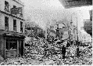
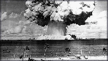
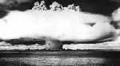

Planète Allah
Le premier du mois de juin de l'An du Stégausaure de Papier crêpé
|
Keylong - Le Premier Ministre du Lahul Alvoâr Onvoâbin a qualifié de "regretable" l'intention impériale de rayer le Bangladesh de la carte du monde. "Nous croyons qu'il serait préférable d'envisager une entente à l'amiable entre nos trois parties". Interrogé sur cette question, l'Empereur Jean a déclaré qu'il ne voyait personnellement aucun inconvénient à ce que le Bangladesh soit éliminé. "À ce moment-ci, mes armées sont après s'occuper de six autres pays dans le monde et je ne vois pas pourquoi nous ferions une exception pour le Bangladesh". Appelé à donner son avis sur cette question, le Maréchal Dion a confirmé que l'Empire n'entendait pas assouplir sa politique extérieure à l'endroit des parlements "non collaboratifs". "Nous attendons toujours que le maire de
Monte-video
s'excuse pour ne pas avoir reconnu l'Empe-reur dans les toilettes de son
Hôtel de ville, que les autorités de Marseilles  |
que Mexico se décide à rendre
le sable d'Accapulco   Face aux actions impériales, le monde pacifié s'interroge. En effet, le Ministre pylonien de la Guerre et des Jours fériés s'est déclaré surpris que la ville de Kalamazoo ait été la cible d'une réprimande impériale, non seulement parce qu'elle fait partie du Spanishland, principal partenaire et fournisseur de matières premières de l'Empire, mais aussi parce que, selon les informations officielles, le seul reproche que pouvait avoir Shefferville à l'endroit de la petite lolcalité fut son intention de ravir à Gary le titre de métropole sainte de l'Islam continental en mettant en chantier la plus grande mosquée souterainne au monde.
|